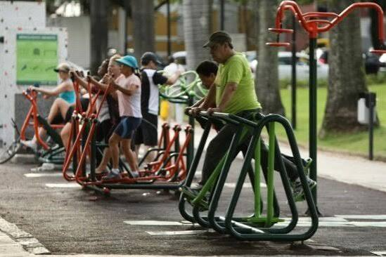
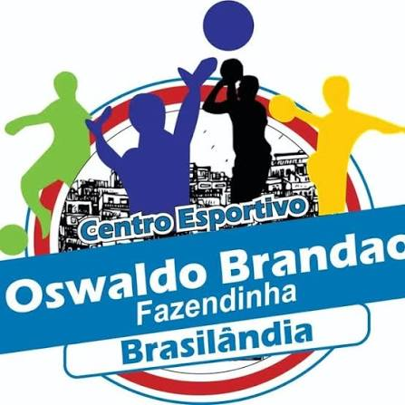
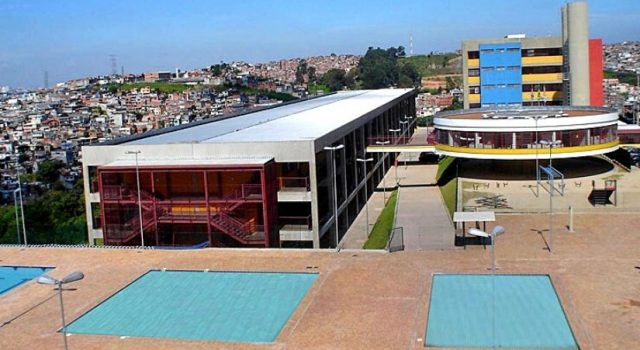
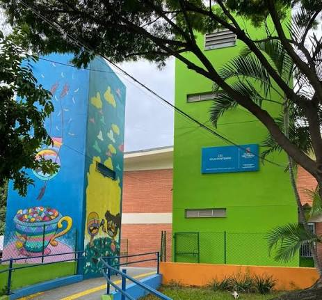
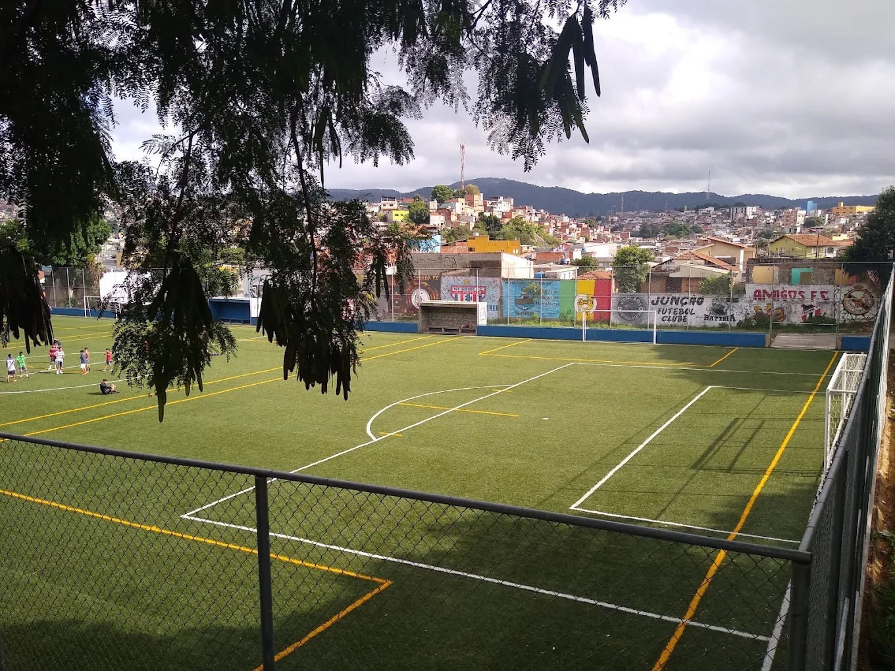
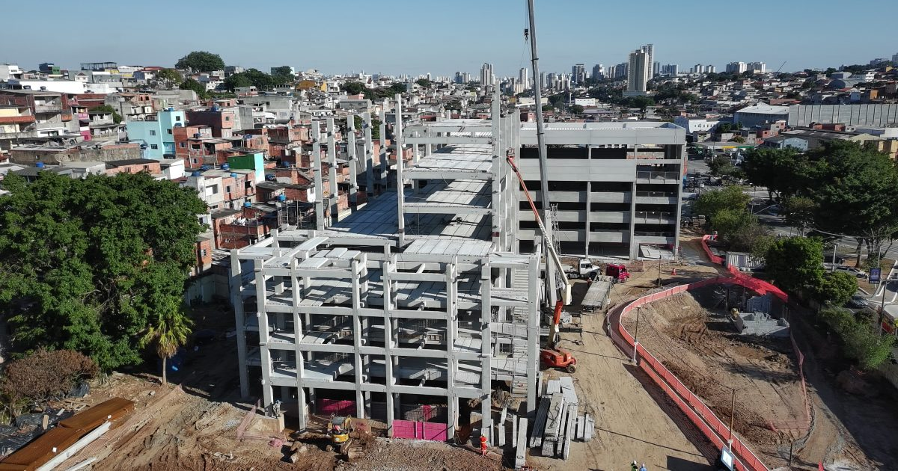
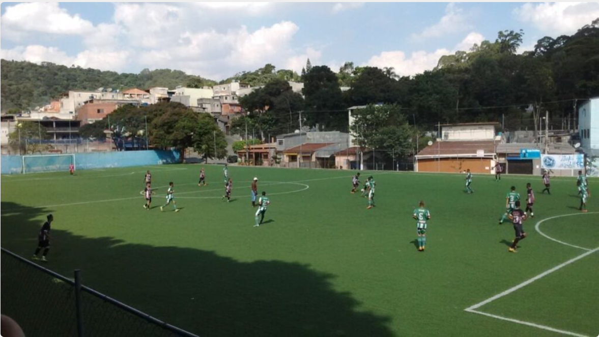
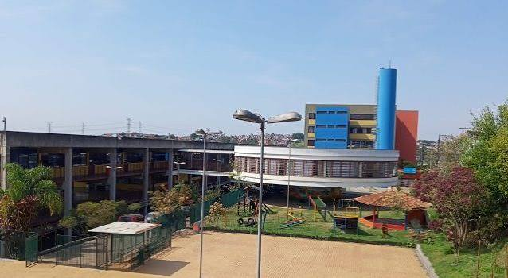
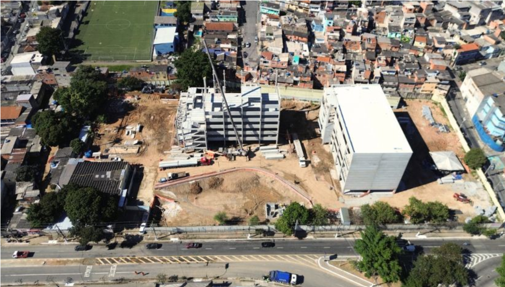

Descubra os espaços públicos, atividades físicas gratuitas e oportunidades de lazer disponíveis na nossa comunidade.
Conheça os espaços
A prática de atividades físicas é fundamental para a saúde, o bem-estar e a qualidade de vida. Entretanto, muitos moradores da Vila Penteado e da Brasilândia encontram dificuldades para identificar os espaços públicos e conhecer as atividades gratuitas disponíveis na região.
Este projeto busca facilitar o acesso a essas informações, reunindo em um único lugar endereços, modalidades esportivas e orientações sobre os equipamentos públicos. Também pretende dar visibilidade às condições desses espaços e à importância da manutenção e conservação pelo poder público.
A prática regular de exercícios contribui para a saúde física, mental e para a prevenção de doenças.
Praças, quadras e centros esportivos promovem a integração entre moradores de diferentes idades.
Os equipamentos públicos oferecem oportunidades de esporte e lazer sem a necessidade de pagar por academias particulares.

Localizado na Rua Michihisa Murata, 120, Vila Brasilândia. O equipamento municipal conta com campo de futebol, ginásio esportivo e atividades como caminhada, alongamento, ginástica, futsal e voleibol adaptado.
Endereço: Rua Michihisa Murata, 120.
Consultar atividades
Localizado no Jardim Paraná, oferece atividades relacionadas ao esporte, educação, cultura e lazer. Entre as modalidades estão natação, hidroginástica, futsal, capoeira, basquete, vôlei, ginástica e pilates. Algumas atividades exigem inscrição e carteirinha.
Endereço: Rua Daniel Cerri, 1549.
Consultar unidade e programação
Localizada na Rua Luís José Junqueira Freire, 602. É uma opção de espaço público com equipamentos de ginástica ao ar livre. A conservação dos aparelhos é importante para garantir o uso seguro pela população.
Endereço: Rua Luís José Junqueira Freire, 602.

Localizado na Rua Reverendo Carlos Wesly, 336. É um espaço esportivo comunitário voltado principalmente ao futebol e à integração dos moradores, incluindo atividades e competições de futebol amador.
Endereço: Rua Reverendo Carlos Wesly, 336.

A nova unidade está em construção e prevê espaços destinados à educação, cultura, esporte e lazer. O projeto inclui piscina semiolímpica, salas de dança e ginástica e outros ambientes de convivência. Ainda não é uma unidade disponível para utilização.
Acompanhar as obras
A Prefeitura disponibiliza informações sobre aulas, modalidades, horários e públicos atendidos nos centros esportivos municipais.
Consultar programação oficial
O CEU Paz reúne diferentes atividades e espaços de convivência. A programação e as informações sobre inscrições podem ser consultadas no portal oficial.
Acessar informações do CEU Paz
A Prefeitura divulgou o avanço das obras da nova unidade, que prevê estrutura para atividades educacionais, culturais e esportivas na Brasilândia.
Ler notícia oficialConheça os espaços da nossa região, pratique atividades físicas e ajude a conscientizar a comunidade sobre a importância da conservação dos espaços públicos.